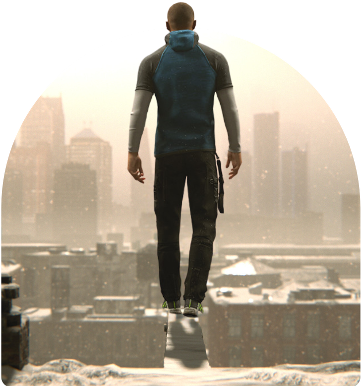
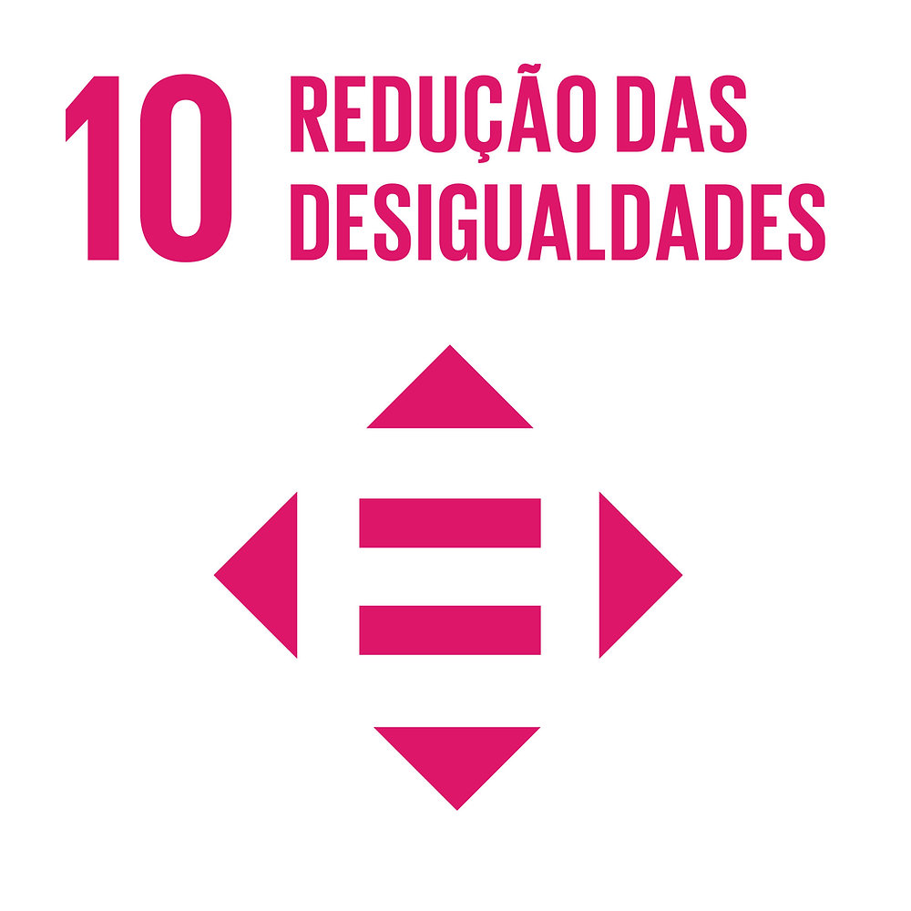

Por que "Detroit - Become Human"?
O jogo "Detroit - Become Human" teve um papel importante na minha forma de enxergar problemas da sociedade que estão presentes no nosso dia a dia há muitos anos. Além disso, a retratação do avanço tecnológico e a forma como os seres humanos se adaptaram à isso na narrativa se assemelha aos tempos atuais, servindo também de exemplo de como não inserirmos a tecnologia em nossas vidas (como substituindo seres humanos por máquinas, causando uma onda gigantesca de desempregos e aumentando a pobreza no mundo caso feita sem moderação.).
O jogo "Detroit - Become Human" teve um papel importante na minha forma de enxergar problemas da sociedade que estão presentes no nosso dia a dia há muitos anos. Além disso, a retratação do avanço tecnológico e a forma como os seres humanos se adaptaram à isso na narrativa se assemelha aos tempos atuais, servindo também de exemplo de como não inserirmos a tecnologia em nossas vidas (como substituindo seres humanos por máquinas, causando uma onda gigantesca de desempregos e aumentando a pobreza no mundo caso feita sem moderação.).

O que é a ODS?
Os Objetivos de Desenvolvimento Sustentável (ODS) são uma série de metas estabelecidas pela Organização das Nações Unidas (ONU) para abordar os principais desafios enfrentados não apenas pelo Brasil, mas pelo mundo todo, em termos de desenvolvimento sustentável. Esses objetivos visam promover a melhoria da qualidade de vida das pessoas, proteger o meio ambiente e garantir o desenvolvimento econômico de forma equitativa e sustentável. Alguns dos objetivos incluem a erradicação da pobreza, a promoção da igualdade de gênero, a garantia de segurança alimentar através de práticas agrícolas sustentáveis, e o acesso à água potável e saneamento básico. O cumprimento desses objetivos requer ações coordenadas em níveis local, nacional e global, envolvendo governos, setor privado, sociedade civil e outros atores relevantes.

 16 - Paz, Justiça e instituições eficazes.
16 - Paz, Justiça e instituições eficazes.
O segundo tópico, interligado ao primeiro, é “paz, justiça e instituições eficazes”. Seguindo a rota pacifista (que reflete em um universo utópico), é possível buscar a igualdade e justiça por meio da paz, em manifestações sem violência buscando a comoção pública que, por fim, resulta na conquista do seu objetivo.
Os Objetivos de Desenvolvimento Sustentável (ODS) são uma série de metas estabelecidas pela Organização das Nações Unidas (ONU) para abordar os principais desafios enfrentados não apenas pelo Brasil, mas pelo mundo todo, em termos de desenvolvimento sustentável. Esses objetivos visam promover a melhoria da qualidade de vida das pessoas, proteger o meio ambiente e garantir o desenvolvimento econômico de forma equitativa e sustentável. Alguns dos objetivos incluem a erradicação da pobreza, a promoção da igualdade de gênero, a garantia de segurança alimentar através de práticas agrícolas sustentáveis, e o acesso à água potável e saneamento básico. O cumprimento desses objetivos requer ações coordenadas em níveis local, nacional e global, envolvendo governos, setor privado, sociedade civil e outros atores relevantes.

10 - Redução das
desigualdades
A principal mensagem transmitida pela narrativa é “redução de desigualdades”, retratada na luta comandada por Markus em busca da liberdade dos androides e a igualdade entre eles e os seres humanos, excluindo a pirâmide hierárquica que foi construída onde humanos mandavam em robôs.
desigualdades
A principal mensagem transmitida pela narrativa é “redução de desigualdades”, retratada na luta comandada por Markus em busca da liberdade dos androides e a igualdade entre eles e os seres humanos, excluindo a pirâmide hierárquica que foi construída onde humanos mandavam em robôs.
16 - Paz, Justiça e instituições eficazes. O segundo tópico, interligado ao primeiro, é “paz, justiça e instituições eficazes”. Seguindo a rota pacifista (que reflete em um universo utópico), é possível buscar a igualdade e justiça por meio da paz, em manifestações sem violência buscando a comoção pública que, por fim, resulta na conquista do seu objetivo.